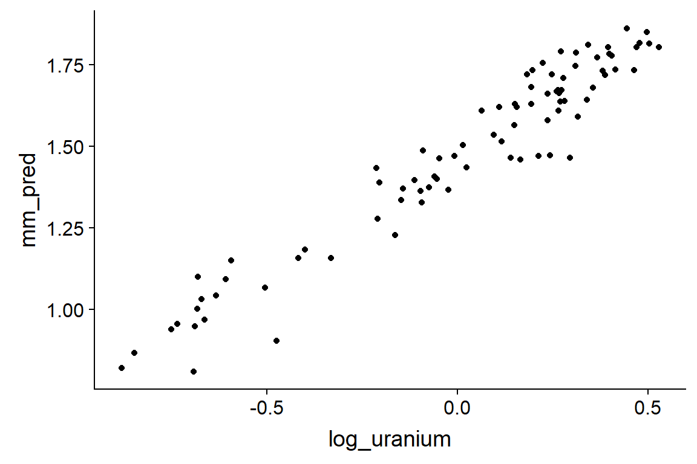
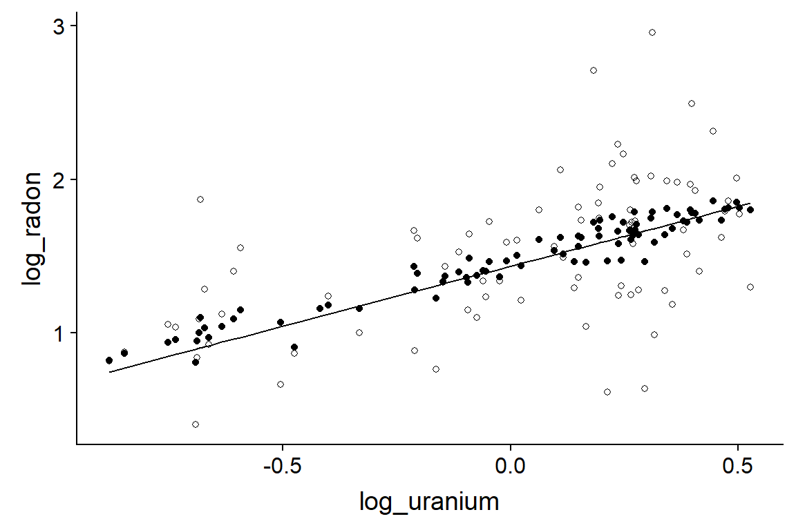
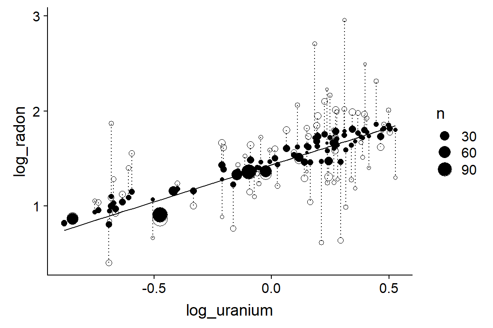
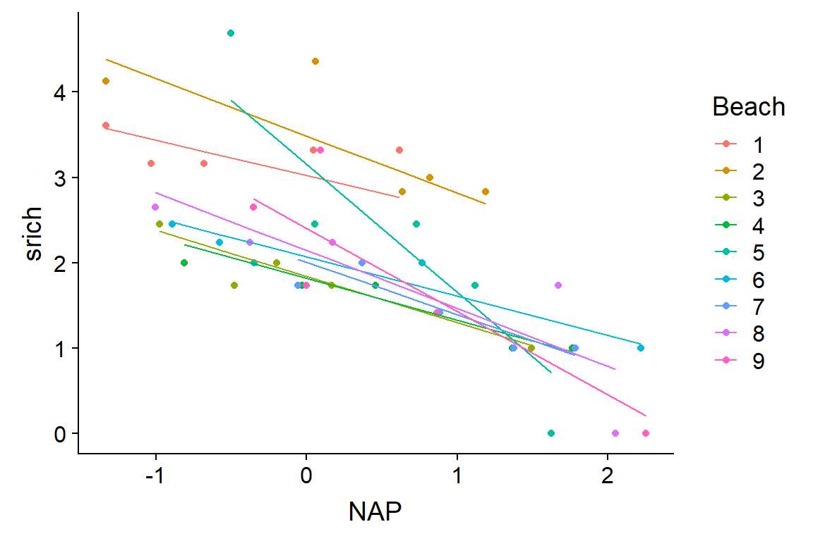

Modèles linéaires mixtes, partie 2
26 novembre 2018
Rappel
Régression linéaire “classique” avec des données groupées: ignorer les groupes, estimer séparément des effets pour chaque groupe, ou tenir compte indirectement des groupes à partir de prédicteurs mesurés au niveau de ces groupes.
Si on ignore la structure groupée des données, résidus ne sont pas indépendants, donc surestimation de la précision des inférences.
Estimer des effets fixes pour chaque groupe est difficile lorsqu’on a peu d’observations par groupe: le hasard de l’échantillonnage crée des différences fortuites entre groupes.
Rappel
La régression linéaire ne considère qu’un terme aléatoire (résidus des observations individuelles).
Les modèles mixtes incluent la variation aléatoire partagée par les observations d’un même groupe.
Les modèles mixtes produisent aussi des estimés des coefficients de la régression pour chaque groupe, mais en supposant une distribution normale de ces coefficients centrée sur la moyenne des groupes.
Comparé aux effets fixes de groupe, ces coefficients sont “contractés” vers la moyenne générale. Cela permet d’obtenir des estimés plus fiables même avec peu d’observations par groupe.
Objectifs
Comprendre comment les modèles mixtes traitent le cas de groupes non-équilibrés.
Faire des prédictions à partir d’un modèle linéaire mixte.
Créer des modèles avec l’effet aléatoire de plusieurs variables et l’effet aléatoire d’une variable sur plus d’un coefficient.
Appliquer la sélection de modèles avec l’AIC aux modèles mixtes.
Modèles mixtes pour groupes non-équilibrés
Exemple: Distribution du radon
- Concentration de radon (
log_radon, échelle logarithmique) dans 919 maisons réparties dans 85 comtés (county) de l’état américain du Minnesota (1 à 116 maisons par comté).
radon <- read.csv("../donnees/radon.csv")
head(radon)## county floor log_uranium log_radon
## 1 AITKIN 1 -0.6890476 0.7884574
## 2 AITKIN 0 -0.6890476 0.7884574
## 3 AITKIN 0 -0.6890476 1.0647107
## 4 AITKIN 0 -0.6890476 0.0000000
## 5 ANOKA 0 -0.8473129 1.1314021
## 6 ANOKA 0 -0.8473129 0.9162907floor: Étage où la mesure a été prise (0 = sous-sol, 1 = rez-de-chaussée)log_uranium: Concentration d’uranium du sol (mesure à l’échelle du comté)
Exemple: Distribution du radon
- Modèle mixte avec effets fixes de l’étage et de la concentration d’uranium, ainsi qu’une variation aléatoire de l’ordonnée à l’origine par comté.
library(lme4)
mm_radon <- lmer(log_radon ~ floor + log_uranium + (1 | county), radon)
summary(mm_radon)## Linear mixed model fit by REML ['lmerMod']
## Formula: log_radon ~ floor + log_uranium + (1 | county)
## Data: radon
##
## REML criterion at convergence: 2134.2
##
## Scaled residuals:
## Min 1Q Median 3Q Max
## -4.9673 -0.6117 0.0274 0.6555 3.3848
##
## Random effects:
## Groups Name Variance Std.Dev.
## county (Intercept) 0.02446 0.1564
## Residual 0.57523 0.7584
## Number of obs: 919, groups: county, 85
##
## Fixed effects:
## Estimate Std. Error t value
## (Intercept) 1.46576 0.03794 38.633
## floor -0.66824 0.06880 -9.713
## log_uranium 0.72027 0.09176 7.849
##
## Correlation of Fixed Effects:
## (Intr) floor
## floor -0.357
## log_uranium 0.145 -0.009Interprétation des effets fixes
(Intercept)est la moyenne delog_radonsifloor= 0 (dans un sous-sol) etlog_uranium= 0.floorest la différence delog_radonsiflooraugmente de 1 (rez-de-chaussée vs. sous-sol).log_uraniumest l’effet d’une augmentation d’une unité delog_uraniumsurlog_radon.- Lorsque variables sont sur une échelle logarithmique, on peut interpréter ce coefficient (0.72) comme un effet multiplicatif: une augmentation de 1% de la concentration d’uranium du sol augmente la concentration de radon dans les maisons de 0.72%.
Prédictions par comté
- Tableau de données avec le nom du comté, sa concentration d’uranium et le nombre de maisons échantillonnées. On fixe la variable
floorà 0 (sous-sol).
comtes <- group_by(radon, county, log_uranium) %>%
summarize(n = n()) %>%
ungroup()
comtes$floor <- 0
head(comtes)## # A tibble: 6 x 4
## county log_uranium n floor
## <fct> <dbl> <int> <dbl>
## 1 AITKIN -0.689 4 0
## 2 ANOKA -0.847 52 0
## 3 BECKER -0.113 3 0
## 4 BELTRAMI -0.593 7 0
## 5 BENTON -0.143 4 0
## 6 BIG STONE 0.387 3 0Prédictions par comté
comtes$mm_pred <- predict(mm_radon, comtes)
ggplot(comtes, aes(x = log_uranium, y = mm_pred)) +
geom_point()
Prédictions par comté
- Comparons ces prédictions à ceux de deux régressions linéaires classiques, avec aucun effet de comté (mais avec l’effet de l’uranium) ou un effet fixe par comté.
lm_radon1 <- lm(log_radon ~ floor + log_uranium, radon)
lm_radon2 <- lm(log_radon ~ floor + county, radon)
comtes <- mutate(comtes, pred1 = predict(lm_radon1, comtes),
pred2 = predict(lm_radon2, comtes))Prédictions par comté
ggplot(comtes, aes(x = log_uranium)) +
labs(y = "log_radon") +
geom_line(aes(y = pred1)) +
geom_point(aes(y = pred2), shape = 1) + # Points vides
geom_point(aes(y = mm_pred))
Prédictions par comté - Effet de n
ggplot(comtes, aes(x = log_uranium)) +
labs(y = "log_radon") +
geom_line(aes(y = pred1)) +
geom_point(aes(y = pred2, size = n), shape = 1) +
geom_point(aes(y = mm_pred, size = n)) +
geom_segment(aes(xend = log_uranium, y = mm_pred, yend = pred2),
linetype = "dotted") # Ligne pointillée reliant les deux prédictions
Prédictions à partir d’un modèle mixte
Rappel: Équation d’un modèle mixte
Modèle avec prédicteurs liés à l’observation \(k\) et au groupe \(j\), avec effet aléatoire sur l’ordonnée à l’origine.
\[ y_k = \gamma_0 + \gamma_1 u_{1j[k]} + \beta_1 x_{1k} + \nu_{j[k]} + \epsilon_k \]
fixefnous donne les estimés des coefficients \(\gamma_0\), \(\gamma_1\) et \(\beta_1\)
eff_fixes <- fixef(mm_radon)
eff_fixes## (Intercept) floor log_uranium
## 1.4657628 -0.6682448 0.7202676Rappel: Équation d’un modèle mixte
Modèle avec prédicteurs liés à l’observation \(k\) et au groupe \(j\), avec effet aléatoire sur l’ordonnée à l’origine.
\[ y_k = \gamma_0 + \gamma_1 u_{1j[k]} + \beta_1 x_{1k} + \nu_{j[k]} + \epsilon_k \]
ranefindique les estimés des effets aléatoires \(\nu_j\).
eff_alea <- ranef(mm_radon)$county
head(eff_alea)## (Intercept)
## AITKIN -0.020642363
## ANOKA 0.011245768
## BECKER 0.012422028
## BELTRAMI 0.111128436
## BENTON 0.008235846
## BIG STONE -0.026196358Prédire des nouvelles observations de groupes existants
- Par défaut, la fonction
predictutilise à la fois les estimés des effets fixes et aléatoires.
- Valeur prédite \(\hat{y}\) pour un sous-sol \(x_1 = 0\) du comté \(j\):
\[ \hat{y} = \hat{\gamma_0} + \hat{\gamma_1} u_{1j} + \hat{\nu_{j}} \] .
pred_man <- eff_fixes["(Intercept)"] +
eff_fixes["log_uranium"] * comtes$log_uranium + eff_alea$`(Intercept)`
all.equal(pred_man, comtes$mm_pred)## [1] TRUEPrédire des observations d’un nouveau groupe
nouv_comte <- data.frame(county = "NOUVEAU", log_uranium = 0.5, floor = 0)
predict(mm_radon, nouv_comte)## Error in levelfun(r, n, allow.new.levels = allow.new.levels): new levels detected in newdataPrédire des observations d’un nouveau groupe
- Pour effectuer une prédiction basée seulement sur les effets fixes, nous devons spécifier l’argument
re.form = ~0.
predict(mm_radon, nouv_comte, re.form = ~0)## 1
## 1.825897eff_fixes["(Intercept)"] + eff_fixes["log_uranium"] * nouv_comte$log_uranium## (Intercept)
## 1.825897Prédictions à partir d’un modèle mixte
Avec un modèle mixte, on peut faire des prédictions pour des groupes non inclus dans les données originales.
Dans ce cas, les prédictions sont basés sur un groupe “moyen” (effet aléatoire de groupe de 0).
L’incertitude associée à cette prédiction est plus grande que lorsqu’on prédit de nouvelles observations pour un groupe existant.
Des méthodes de simulation (pas vues dans ce cours) sont nécessaires pour obtenir des intervalles de confiance ou de prédiction pour ces estimés.
Effets aléatoires multiples
Exemple: Croissance des arbres de plusieurs espèces
- 100 arbres mesurés pour 5 années consécutives.
- Nous voulons modéliser la croissance annuelle en fonction de deux prédicteurs qui varient pour chaque observation (DHP, âge) et de la tolérance à l’ombre de l’espèce.
| ID Arbre | Année | Croissance | DHP | Âge | Espèce | Ombre |
|---|---|---|---|---|---|---|
| … | … | … | … | … | … | … |
Choisir les effest aléatoires d’un modèle
Pour quels groupes d’observations la variation de la réponse serait-elle corrélée (entre observations d’un même groupe)?
- les observations prises sur le même arbre d’une année à l’autre;
- les observations de deux arbres prises la même année; et
- les observations prises sur des arbres de la même espèce.
Équation du modèle
- Croissance \(y_k\) de l’arbre \(i\) de l’espèce \(j\) lors de l’année \(t\):
\[ y_k = \gamma_0 + \gamma_1 u_{1j[k]} + \beta_1 x_{1k} + \beta_2 x_{2k} + \nu_{j[k]} + \xi_{i[k]} + \tau_{t[k]} + \epsilon_k \]
- Formule dans R:
croissance ~ ombre + DHP + age + (1 | espece) + (1 | id_arbre) + (1 | annee)Effets aléatoires croisés ou nichés
Les effets de l’arbre et de l’année sont croisés (crossed): chaque arbre est mesurée pour plusieurs années et plusieurs arbres sont mesurés chaque année. De même, les effets de l’espèce et de l’année sont croisés.
Les effets de l’arbre et de l’espèce sont nichés (nested): chaque arbre fait partie d’une seule espèce.
Effets aléatoires croisés ou nichés
- Pour indiquer à R que l’effet A est niché dans l’effet B, on écrit par exemple
(1 | B/A). Dans ce cas-ci, la formule pourrait être ré-écrite:
croissance ~ ombre + DHP + age + (1 | espece / id_arbre) + (1 | annee)Si les valeurs d’
id_arbrene sont pas répétées d’une espèce à l’autre, il n’est pas nécessaire de préciser les effets nichés.Si les arbres étaient numérotés 1, 2, … pour chaque espèce, il faut indiquer l’effet niché dans le modèle, sinon R croirait que les arbres “1” de chaque espèce représentent le même individu.
Expérience en parcelles divisées
- Tableau de données
Oatsvu au dernier laboratoire.
library(nlme)
# Changer le bloc en facteur non-ordonné
Oats$Block <- factor(Oats$Block, ordered = FALSE)
head(Oats)## Grouped Data: yield ~ nitro | Block
## Block Variety nitro yield
## 1 I Victory 0.0 111
## 2 I Victory 0.2 130
## 3 I Victory 0.4 157
## 4 I Victory 0.6 174
## 5 I Golden Rain 0.0 117
## 6 I Golden Rain 0.2 114Expérience en parcelles divisées
Configuration spatiale possible de cette expérience

- Dans ce type de plan, un des traitements est appliqué à une plus grande surface et un autre traitement est niché dans le premier.
Effet aléatoire de bloc
- Dans le laboratoire, nous avions défini un effet aléatoire du bloc, car les observations varient moins dans le même bloc qu’entre deux blocs différents.
mm_oats <- lmer(yield ~ nitro + Variety + (1 | Block), Oats)Il est aussi possible que la variance soit plus petite entre quadrants d’une même section.
Nous pouvons tenir compte de ce deuxième niveau de groupement en incluant un effet aléatoire de la section (variété) niché dans celui du bloc.
Effet aléatoire de bloc et section
mm_oats2 <- lmer(yield ~ nitro + Variety + (1 | Block / Variety), Oats)
summary(mm_oats2)## Linear mixed model fit by REML ['lmerMod']
## Formula: yield ~ nitro + Variety + (1 | Block/Variety)
## Data: Oats
##
## REML criterion at convergence: 578.9
##
## Scaled residuals:
## Min 1Q Median 3Q Max
## -1.62948 -0.65841 -0.07207 0.55785 1.71463
##
## Random effects:
## Groups Name Variance Std.Dev.
## Variety:Block (Intercept) 108.9 10.44
## Block (Intercept) 214.5 14.65
## Residual 165.6 12.87
## Number of obs: 72, groups: Variety:Block, 18; Block, 6
##
## Fixed effects:
## Estimate Std. Error t value
## (Intercept) 82.400 8.059 10.225
## nitro 73.667 6.781 10.863
## VarietyMarvellous 5.292 7.079 0.748
## VarietyVictory -6.875 7.079 -0.971
##
## Correlation of Fixed Effects:
## (Intr) nitro VrtyMr
## nitro -0.252
## VartyMrvlls -0.439 0.000
## VarityVctry -0.439 0.000 0.500Interprétation des résultats
À première vue, il apparaît contradictoire d’utiliser la même variable
Varietycomme effet fixe et comme effet aléatoire.Toutefois, l’effet aléatoire ne s’applique pas aux différences entre les 3 variétés (il serait incorrect d’écrire
(1 | Variety)), mais plutôt aux différences entre les 18 sections représentées par les combinaisons d’un bloc et d’une variété.
Interprétation des résultats
Le deuxième modèle donne un intervalle de confiance plus large pour les effets fixes des variétés, mais moins large pour l’effet de l’azote.
confint(mm_oats)
## Computing profile confidence intervals ...
## 2.5 % 97.5 %
## .sig01 8.126934 29.461033
## .sigma 12.737325 17.936286
## (Intercept) 67.144282 97.655713
## nitro 57.976482 89.356851
## VarietyMarvellous -3.302201 13.885535
## VarietyVictory -15.468868 1.718868
confint(mm_oats2)
## Computing profile confidence intervals ...
## 2.5 % 97.5 %
## .sig01 4.211238 16.580613
## .sig02 5.476922 29.072404
## .sigma 10.674601 15.588813
## (Intercept) 66.501050 98.298960
## nitro 60.261178 87.072155
## VarietyMarvellous -8.458427 19.041762
## VarietyVictory -20.625094 6.875096Interprétation des résultats
- Dans le premier modèle, nous supposions que toutes les observations étaient indépendantes à l’intérieur d’un bloc. Nous n’avons pas en fait 4 réplicats indépendants pour chaque variété.
Interprétation des résultats
- En considérant les effets aléatoires par section, la variance résiduelle entre observations d’une même section est réduite. Puisque les 4 niveaux de concentration d’azote sont répliqués dans chaque section, une réduction de la variance résiduelle augmente la précision du coefficient pour cette variable.
Modèle mixte avec pente aléatoire
Exemple
- Reprenons le jeu de données
rikzvu au dernier cours, présentant la richesse spécifique de 45 sites intertidaux répartis sur 9 plages des Pays-Bas.
rikz <- read.csv("../donnees/rikz.csv")
rikz <- mutate(rikz, Beach = as.factor(Beach), Exposure = as.factor(Exposure))
# Transformer la réponse
rikz <- mutate(rikz, srich = sqrt(Richness))
head(rikz)## Sample Richness Exposure NAP Beach srich
## 1 1 11 10 0.045 1 3.316625
## 2 2 10 10 -1.036 1 3.162278
## 3 3 13 10 -1.336 1 3.605551
## 4 4 11 10 0.616 1 3.316625
## 5 5 10 10 -0.684 1 3.162278
## 6 6 8 8 1.190 2 2.828427- Nous avons déjà utilisé des modèles avec effet aléatoire sur l’ordonnée à l’origine.
mm_rikz <- lmer(srich ~ NAP + (1 | Beach), rikz)Modèle mixte avec pente aléatoire
\[ \hat{y_k} = \alpha_{j[k]} + \beta_{j[k]} x_k \]
Ici, l’ordonnée à l’origine et la pente de \(y\) vs. \(x\) varient entre groupes.
Le modèle estime la moyenne des \(\alpha_j\) et \(\beta_j\) (effets fixes), les écarts-types des effets aléatoires (\(\sigma_\alpha\) et \(\sigma_\beta\)) ainsi que leur corrélation \(\rho_{\alpha \beta}\).
Modèle mixte avec pente aléatoire
- On ajoute le NAP dans la partie gauche du terme d’effet aléatoire.
mm_rikz2 <- lmer(srich ~ NAP + (1 + NAP | Beach), rikz)
summary(mm_rikz2)## Linear mixed model fit by REML ['lmerMod']
## Formula: srich ~ NAP + (1 + NAP | Beach)
## Data: rikz
##
## REML criterion at convergence: 92.5
##
## Scaled residuals:
## Min 1Q Median 3Q Max
## -1.6245 -0.4430 -0.1095 0.3023 2.1610
##
## Random effects:
## Groups Name Variance Std.Dev. Corr
## Beach (Intercept) 0.4389 0.6625
## NAP 0.1582 0.3978 -0.41
## Residual 0.2159 0.4647
## Number of obs: 45, groups: Beach, 9
##
## Fixed effects:
## Estimate Std. Error t value
## (Intercept) 2.4369 0.2348 10.379
## NAP -0.7026 0.1543 -4.552
##
## Correlation of Fixed Effects:
## (Intr)
## NAP -0.390Modèle mixte avec pente aléatoire
- Coefficients estimés par plage
coef(mm_rikz2)## $Beach
## (Intercept) NAP
## 1 3.022772 -0.4129461
## 2 3.485563 -0.6702414
## 3 1.840190 -0.5388216
## 4 1.816460 -0.4861710
## 5 3.149914 -1.4983870
## 6 2.067750 -0.4565699
## 7 2.003302 -0.6094925
## 8 2.142433 -0.6761907
## 9 2.404104 -0.9748256
##
## attr(,"class")
## [1] "coef.mer"Modèle mixte avec pente aléatoire
rikz$fit2 <- fitted(mm_rikz2)
ggplot(rikz, aes(x = NAP, y = srich, color = Beach)) +
geom_point() +
geom_line(aes(y = fit2))
Sélection de modèles
Sélection de modèles
- Plus complexe pour les modèles mixtes, car il faut choisir à la fois les termes fixes et aléatoires.
- Par exemple, comparons l’AICc des deux modèles précédents (avec ou sans effet aléatoire sur la pente).
library(AICcmodavg)
aictab(list(mm_rikz = mm_rikz, mm_rikz2 = mm_rikz2))## Warning in aictab.AIClmerMod(list(mm_rikz = mm_rikz, mm_rikz2 = mm_rikz2)):
## Model selection for fixed effects is only appropriate with ML estimation:
## REML (default) should only be used to select random effects for a constant set of fixed effects##
## Model selection based on AICc:
##
## K AICc Delta_AICc AICcWt Cum.Wt Res.LL
## mm_rikz 4 106.15 0.0 0.57 0.57 -48.57
## mm_rikz2 6 106.75 0.6 0.43 1.00 -46.27Sélection de modèles
Par défaut,
lmerestime les paramètres du modèle mixte par la méthode du maximum de vraisemblance restreint (REML), afin d’obtenir des estimés non-biaisés des paramètres de variance.L’avertissement indique que l’AIC(c) calculé sur des modèles ajustés par REML est seulement valide pour la comparaison de modèles avec les mêmes effets fixes, mais différents effets aléatoires.
Sélection de modèles
Zuur et al. (2009) suggèrent le protocole suivant:
D’abord, inclure tous les effets fixes qui nous intéressent et choisir, si nécessaire, entre différentes versions des effets aléatoires. Cette étape est basée sur l’AIC des modèles ajustés par REML.
Conserver les effets aléatoires choisis à l’étape précédente et comparer différentes versions des effets fixes. Cette étape requiert de comparer les modèles ajustés selon le maximum de vraisemblance, pas le REML (avec l’option
REML = FALSEdelmer).Réajuster le meilleur modèle par REML pour obtenir les estimés finaux.
Exemple
- Modèle complet pour les effets fixes inclut NAP et Exposure.
mod_comp <- lmer(srich ~ NAP + Exposure + (1 | Beach), rikz)
mod_comp2 <- lmer(srich ~ NAP + Exposure + (1 + NAP | Beach), rikz)
aictab(list(mod_comp = mod_comp, mod_comp2 = mod_comp2))## Warning in aictab.AIClmerMod(list(mod_comp = mod_comp, mod_comp2 = mod_comp2)):
## Model selection for fixed effects is only appropriate with ML estimation:
## REML (default) should only be used to select random effects for a constant set of fixed effects##
## Model selection based on AICc:
##
## K AICc Delta_AICc AICcWt Cum.Wt Res.LL
## mod_comp 6 100.18 0.0 0.8 0.8 -42.98
## mod_comp2 8 102.98 2.8 0.2 1.0 -41.49Exemple
- Comparaison des effets fixes (modèles ajustés avec ML)
mod_comp_ml <- lmer(srich ~ NAP + Exposure + (1 | Beach), rikz, REML = FALSE)
mod_nap_ml <- lmer(srich ~ NAP + (1 | Beach), rikz, REML = FALSE)
aictab(list(mod_comp_ml = mod_comp_ml, mod_nap_ml = mod_nap_ml))##
## Model selection based on AICc:
##
## K AICc Delta_AICc AICcWt Cum.Wt LL
## mod_comp_ml 6 92.13 0.0 0.99 0.99 -38.96
## mod_nap_ml 4 101.83 9.7 0.01 1.00 -46.42Effet fixe ou aléatoire?
On ne peut pas utiliser l’AIC pour déterminer si une variable devrait être considérée comme effet fixe ou aléatoire, par exemple, pour choisir entre
srich ~ NAP + Beachetsrich ~ NAP + (1 | Beach).Il faut donc déterminer a priori quelles variables constituent des effets fixes ou aléatoires. Comment choisir?
Effet fixe ou aléatoire?
Si on veut estimer l’effet d’un ou plusieurs traitements spécifiques sur la réponse, la variable de traitement est un effet fixe.
Si la variable catégorielle a seulement deux niveaux (binaire), il faut un effet fixe. Effet aléatoire peut être estimé avec 3-4 niveaux, mais la variance est incertaine.
L’effet aléatoire devient avantageux avec plusieurs groupes et peu d’observations dans certains de ces groupes.
L’effet aléatoire est aussi utile si on s’intéresse moins aux différences entre groupes spécifiques qu’à la variation entre groupes (incluant les groupes non observés).
Résumé
Les modèles mixtes ajustent les estimés des effets aléatoires en fonction du nombre d’observations par groupe: moins il y a d’observations par groupe, plus son effet est contracté vers la moyenne générale.
Pour prédire une nouvelle observation dans un groupe existant, nous utilisons l’effet aléatoire estimé pour ce groupe. Pour prédire une nouvelle observation dans un nouveau groupe, nous utilisons seulement les effets fixes (l’effet d’un groupe “moyen”).
Plusieurs effets aléatoires peuvent être inclus dans un même modèle. Ces effets peuvent être nichés ou croisés. Si les niveaux de la variable \(A\) sont nichés dans ceux de la variable \(B\), leur effet aléatoire est représenté par
(1 | B/A)dans la formule du modèle.
Résumé
Une variable peut avoir un effet aléatoire sur l’ordonnée à l’origine et sur le coefficient (la pente) d’un prédicteur individuel. Cela indique que l’effet du prédicteur sur la réponse varie d’un groupe à l’autre, de façon semblable à une interaction dans un modèle linéaire classique.
L’AIC(c) est une mesure valide pour la comparaison de modèles avec différents effets aléatoires et les mêmes effets fixes, ou avec différents effets fixes et les mêmes effets aléatoires. Ces modèles doivent être ajustés par REML dans le premier cas et par ML (
REML = FALSE) dans le deuxième.
Références
Harrison, X.A., Donaldson, L., Correa-Cano, M.E., Evans, J. Fisher, D.N., Goodwin, C.E.D., Robinson, B.S., Hodgson, D.J., Inger, R. (2018) A brief introduction to mixed effects modelling and multi-model inference in ecology. PeerJ 6: e4794.
Gelman, A. and Hill, J. (2006) Data Analysis Using Regression and Multilevel/Hierarchical Models. Cambridge, Cambridge University Press.
Zuur, A.F., Ieno, E.N., Walker, N.J., Saveliev, A.A., Smith, G.M. (2009) Mixed Effects Models and Extensions in Ecology with R. New York, Springer-Verlag.